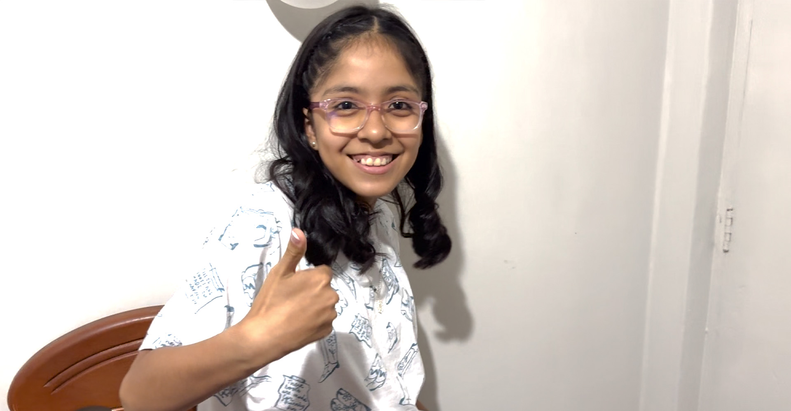
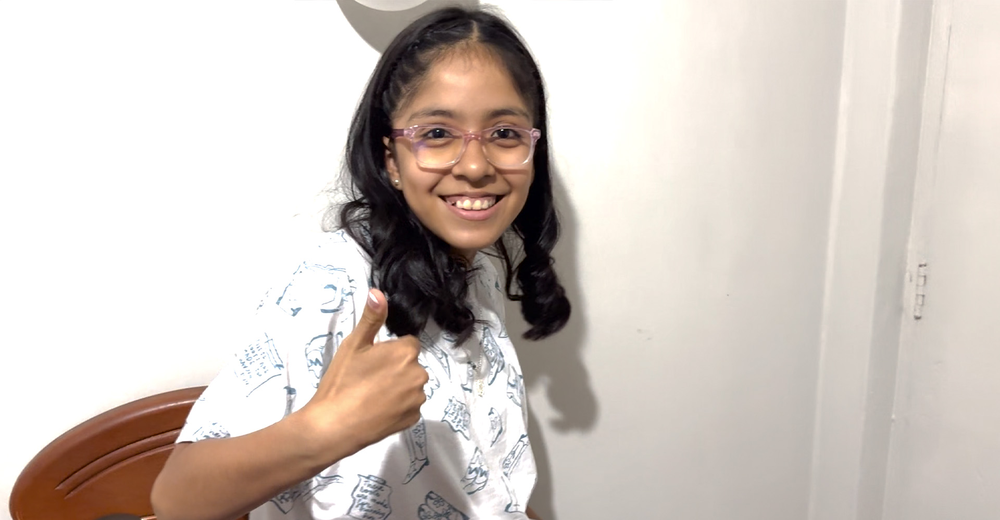

¿Qué es Mentally?
Mentally es un prototipo diseñado para aprender jugando y es ideal para fomentar la participación en clases, estudiar para los exámenes o simplemente aprender. Estudios afirman que la interacción con distintos juegos permite que la información se integre en la memoria de forma más significativa y duradera, debido al aumento de la atención y la liberación de endorfinas y serotonina. Pero no solo eso, estos procesos facilitan el desarrollo de habilidades básicas. (Fuente:"La Mente es Maravillosa.com")
¿Cómo funciona?
Mentally tiene un sistema electrónico compuesto de luces LED el cual funciona de manera aleatoria al iniciar el juego. Estos LEDS representan una categoría (LED ROJO: Matémática, LED AMARILLO: Comunicación, LED AZUL: Historia y LED VERDE:Ciencia) Cada categoría cuenta con 15 preguntas que se distribuirán en tarjetas del mismo color de las categorías, las que se irán respondiendo a medida que se desarrolle el juego. Las preguntas deben ser respondidas en el lapso de 15 segundos (Tiempo que se mostrará en una pantalla LCD a manera de cronómetro) Esto con el fin de darle más emoción al juego. Finalmente el participante que tenga mayor cantidad de respuestas correctas gana el juego.
Sistema Electrónico
Utilizamos Tinkercad, un software de diseño, que nos permitió validar y realizar pruebas de ensayo y error antes de la implementación en físico del prototipo. Una vez realizado y aprobado el diseño final, se descargó el código de programación para culminar con implementación en el prototipo en físico.
Implementación física
Para la implementación física del prototipo, primero se realizó la prueba de funcionamiento del circuito en TINKERCAD, una vez aprobado se realizó la compra de materiales y la verificación de posibles estructuras que nos sirvan como contenedor de las piezas. Como siguiente paso se realizó el armado del circuito, además la implementación de la programación utilizando el programa ARDUINO IDE, programa que hace posible trasladar el código de programación al ARDUINO UNO y de esta manera darle vida al circuito real. Cabe mencionar que la implementación del programa fue resultado de ensayo y error ya que a veces los materiales que se encuentran disponibles en TINKERCAD no coinciden con los que tenemos en las tiedas de electrónica locales. Una vez implementado el código de programación verificamos que todo este correcto para asegurarlo con nuestra estructura. Finalmente, con el prototipo implementado realizamos la prueba del producto con los usuarios finales, quienes además nos ayudarán con sus comentarios y críticas a mejorar el prototipo.
¿Qué impacto tuvo el prototipo?
Para la prueba final tuvimos como participantes a dos niños y un padre de familia, a quien previamente se le explicó como era el funcionamiento del juego para que luego el pueda aplicarlo con sus hijos. En esta prueba nos abstuvimos de participar para darle mayor credibilidad al funcionamiento del prototipo y pueda ser utilizado con total confianza. Sin embargo si pudimos conversar brevemente con una de las niñas participantes para que nos brinde una opinión acerca del juego. Sophia de 10 años, fue la más emocionada por participar en este juego y comentó que le gustaría jugar con sus amigos, además le gustaría que hayan más preguntas de matemática, sobre todo de raíces cuadradas.

 
